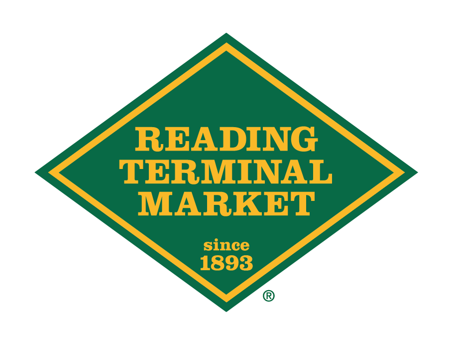
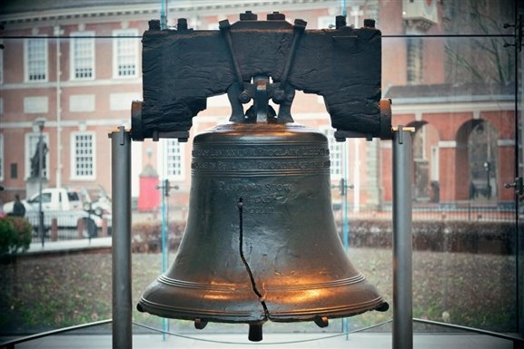
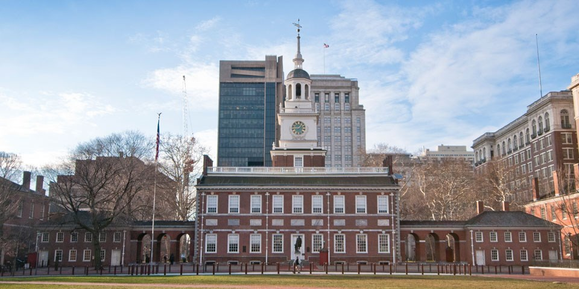
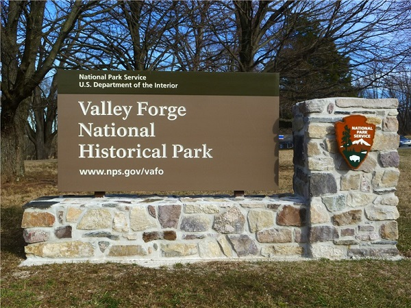
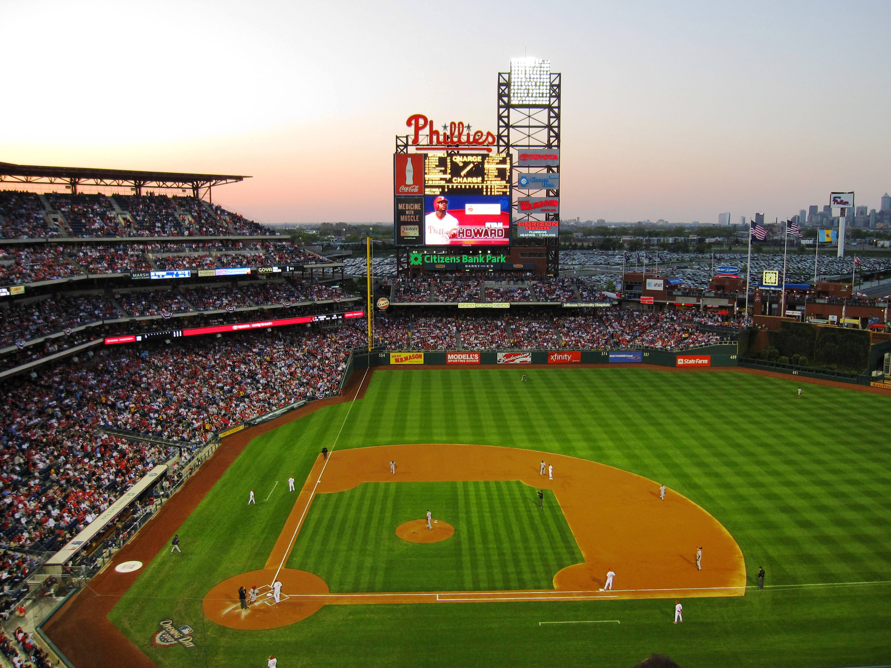
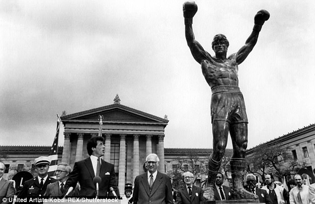

- Geno's Steaks
- Sonny's Famous Steaks
- Dalessandro's Steaks and Hoagies
- Jimmy G's Steaks
- Joe's Steaks
Best Rated Attractions in Philadelphia
- Reading Terminal Market 
- The Liberty Bell Center 
- Independence Hall 
- Valley Forge National History Park 
- Citizen's Bank Park 
- Rocky Statue and Rocky Steps 
Reviews
Nancy Williams
"Philadelphia is such a beautiful city with so many interesting people and attractions. I would definitely go back."

Tom Spencer
"If you want a good cheesesteak I'd go to Geno's.. best one in all of Philly."
Pat Soprano
"My home forever. I love Philly and recommend everyone to come here."